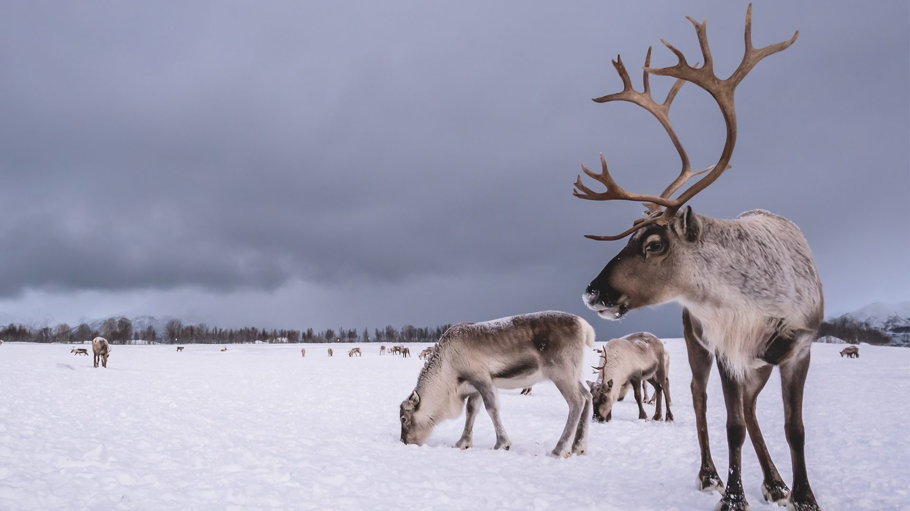

The early Norwegians were hunters and gatherers. Archaeological finds show that the reindeer was a primary prey. The reindeer thrives in a tundra-like landscape, making the Norwegian mountains and highland plateaus its perfect habitat.
The reindeer is a migratory animal – moving between seasonal feeding and birthing grounds. The early human family groups followed the reindeer on its journey. The animal provided food and warm clothing in a harsh environment.
The coat is white-grey-brown and particularly dense. This allows the animals to live under cold weather conditions – minus 40 degrees centigrade and more. Evolution shaped the reindeer’s cloven hoofs in a way that makes it easier to walk on snow during the winter – and on marshland during the summer. The hoofs are also adapted to dig for food through the snow. Sometimes, the reindeer gnaws on shed antlers found on the ground, or even antlers still on a fellow reindeer. Probably in an attempt to stock up on minerals and nutrients.
We call the female reindeer a cow (simle), the male a bull (bukk), and the young a calf (kalv). The species live in herds and can reach an age of up to 18 years. The birthing season is in May-June, and the cow gets typically one calf only. Both the female and the male grow antlers – and develops and loses a new set every year. The bull loses the antlers in the autumn – after the mating season. The cow, however, keeps her antlers until after she has given birth in the spring. This gives her the upper hand all through the winter when competing for food with the males and young individuals.
During the winter, the reindeer seek areas where the snow is not too deep. The primary winter food is lichen – a plant-like and rootless organism that grows on rocks and trees. The animals also eat dry grass, leaves, moss – and from available bushes. In bad weather, the reindeer lies down and lets the snow build up around it.